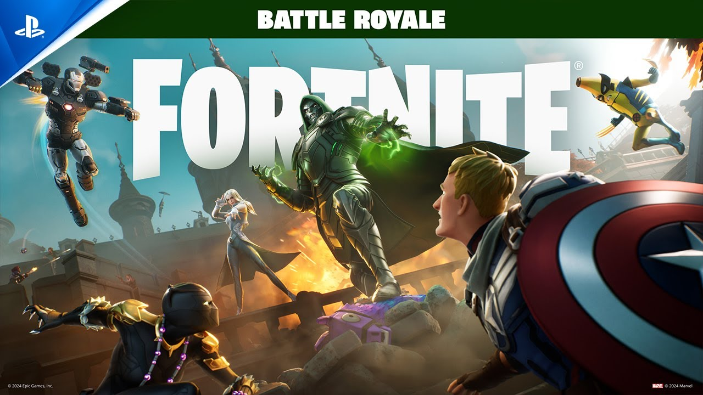

Fortnite: Epic Games anuncia alterações no passe de batalha
Uma coisa diferenciada em um games online é ser Veterano, pois você tem itens conquistados durante o a vida útil do jogo que jogadores novos não tem acesso e nem possibilidades de conquistar, seja pelo Passe de Batalha, drops ou por compras de itens na loja. Então, se você joga Fortinite e tem essa vantagem, saiba que a Epic Games perderá essa singularidade muito em breve.
[propaganda]A produtora do Fortnite a EpicGames anunciou nessa ultima quarta-feira dia 07/08/2024, que após 18 meses que o passe de batalha se encerou alguns itens poderá estar disponíveis área de venda na loja do Fortnite. Sendo eles skins, mochilas, picaretas, gestos, instrumentos, adesivos, envelopamentos, tela de lob e ícones de estandarte.
Esta estratégia da Epic Games é de que seus novos plaeys tenham acesso a itens de Passes de Batalha antigos - Bem como itens que são licenciados de outras franquias. Logicos que os itens vendidos na loja receberão modificações dos itens uma vez já liberado.
"A razão para essa mudança é que queremos que os jogadores possam desfrutar do conteúdo do passe de batalha, como trajes baseados em personagens licenciados populares, justificou a publicação da Epic Games". "Embora não haja garantia de que um item do passe chegue á loja após essa alteração, o conteúdo de PI de futuros passes de batalha poderá chegar á loja pelo menos 18 meses após a expiração do passe".
Isso serpa o fim dos itens Raros e Lendários?